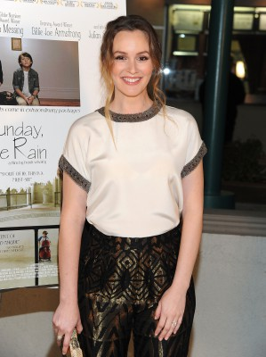
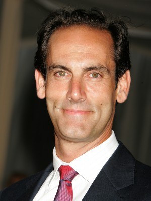
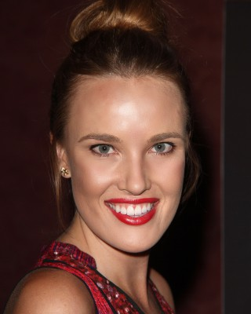
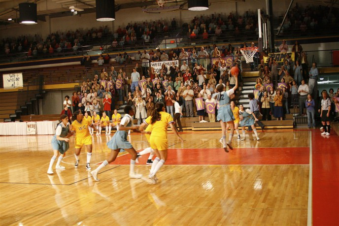

#4356 Die Tochter meines besten Freundes
Alternativ: The Oranges

 IMDB-Wertung: 5.9 / 10
IMDB-Wertung: 5.9 / 10  Metascore: 0
Metascore: 0 
In einer beschaulichen Vorortsiedlung in New Jersey wohnen David und Paige Walling neben Terry und Cathy Ostroff. Sie sind nicht nur Nachbarn, sondern zugleich auch beste Freunde und führen ein Leben, das von Harmonie, Unaufgeregtheit und Einvernehmlichkeit geprägt ist. Doch mit der Ruhe ist es abrupt vorbei, als Nina Ostroff nach fünf Jahren Abstinenz zu ihren Eltern zurückkehrt. Sie hat sich gerade frisch von ihrem Verlobten Ethan getrennt. Alle glauben nun daran, dass sie dem erfolgreichen Sohn der Wallings – Toby – verfallen wird. Doch es kommt alles anders als gedacht. Nina verliebt sich in David und dieser erwidert ihre Gefühle. Ihnen gelingt es allerdings nicht, ihre Affäre zu verheimlichen. Als Ninas Eltern Wind von der Sache bekommen, wird die Freundschaft der beiden Nachbarsfamilien auf eine ernsthafte Probe gestellt…
Jahr: 2011
Dauer: 90 Minuten
FSK: 12
Land: USA Studio: ATO PicturesTonspuren: DTS - ,
Untertitel: Deutsch,
Auflösung: 1080p (1920x1080) Größe: 5693 MB
Genre: Komödie, Drama, Liebe
Regisseur: Julian Farino
Drehbuch: Chi-long To
Soundtrack:
Darsteller:
- Alia Shawkat als Vanessa
 Hugh Laurie als David
Hugh Laurie als David Oliver Platt als Terry
Oliver Platt als Terry Allison Janney als Cathy
Allison Janney als Cathy Catherine Keener als Paige
Catherine Keener als Paige- Ian Helfer als Christmas Caroler
- Marceline Hugot als Christmas Caroler
-  Leighton Meester als Nina
 Adam Brody als Toby
Adam Brody als Toby- Aya Cash als Maya
- Hoon Lee als Henry
- Heidi Kristoffer als Meredith Lovett
-  Damian Young als Gideon Allen
- Betsy Aidem als Anne Allen
- Tim Guinee als Roger
- Mando Alvarado als Chef
- John Dossett als Shelly
- Townsend Ambrecht als Rave Dancer , uncredited
- Stephen Badalamenti als Taxi Driver , uncredited
- Jennifer Bronstein als Amy , uncredited
-  Cassidy Gard als Samantha , uncredited
- Boyd Holbrook als Circle , uncredited
 Lucas Papaelias als Mikhalay , uncredited
Lucas Papaelias als Mikhalay , uncredited- Joanna Theobalds als Restaurant Manager , uncredited
- Laura Flanagan als Christmas Caroler
- Curtis McClarin als Christmas Caroler
- Jay Reiss als Christmas Caroler
- Sarah Saltzberg als Christmas Caroler
- Sam Rosen als Ethan
- Arthur Anderson als Innkeeper
- Paul Fears als Ultimate Frisbee Player
- John Srednicki als Waiter
- Rachel Gittler als Rave Dancer , uncredited
-  Jeffrey Mowery als Gambler , uncredited
- Sarkiss Yen als Peter's Friend , uncredited
Datei: X:\2011(N-Z)\Tochter meines besten Freundes, Die (2011, FSK12, 1920x1080).mkv seit 12.09.2016
Festplatte: HD 2011(G-Z)
 Es gibt insgesamt 132 Filme in der Gruppe '2011(N-Z)'
Es gibt insgesamt 132 Filme in der Gruppe '2011(N-Z)'